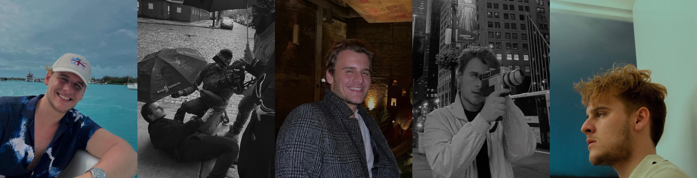

I am Berk Civan. On June 29, 2001, i was born in Turkey as the son of Bulgarian immigrants. I had the opportunity to study in the United Kingdom, Canada, and various Turkish cities while growing up in Turkey before moving to New York to attend university. Throughout my childhood, I was a member of various theatrical communities such as Ragip Savas Akademi and Sahne Hane. When I started university as a digital marketing and new media major, I continued my studies by adding theater/acting and Spanish studies as minors. I worked as an actor and production assistant on several productions at NYU, the New York Film Academy, and the Digital Film Academy NYC. My first professional video, created at Fordham University and awarded the finest cortometraje of 2022 by William DePietra, was made possible by the opening of doors to such endeavors. I've spent the last several years of my professional life working as a BCP marketing agent and a freelance writer, and now it's time for me to retire.